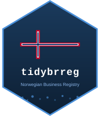

Retrieve the corporate group structure (konsernstruktur)
Source:R/konsern.R
brreg_konsern.RdFetch the registered group hierarchy for a Norwegian legal entity
from the Enhetsregisteret konsernstruktur endpoint (added by BRREG
2026-06-24). The tree is returned flat: one row per node, root
included at level = 0, each child carrying its link form
(knytningsform, e.g. KDAT "Konsern datter"), ownership basis
(grunnlag, e.g. "100%"), and the registration date of the
relation.
Value
A tibble with one row per node in the group tree.
Columns: org_nr (the queried entity), node_org_nr,
node_name, level (0 for the root), link_form,
link_form_desc, basis, relation_date (Date),
parent_org_nr, parent_name, legal_form, legal_form_desc.
Returns an empty tibble if no group structure is registered.
Details
The JSON response omits knytningsform on the root node while the
API's CSV variant emits it as KKKK "Øverste mor"; the root row is
synthesized here to match the CSV semantics.
This is the ownership hierarchy and is distinct from
brreg_children(), which searches overordnetEnhet — the
administrative parent relation used in public-sector (ORGL)
structures, not konsern ownership.
404 semantics
The endpoint returns 404 both for organization numbers that do not
exist and for live entities that are not part of any registered
group — the common case for ordinary companies. A warning is issued
and an empty tibble returned; the in_corporate_group column from
brreg_entity() disambiguates the two without a second lookup
here.
See also
brreg_children() for the ORGL administrative hierarchy,
brreg_entity() for the in_corporate_group flag,
brreg_roles_legal() for roles an entity holds in others.
Other tidybrreg entity functions:
brreg_board_summary(),
brreg_children(),
brreg_download(),
brreg_entity(),
brreg_prokura(),
brreg_roles(),
brreg_roles_legal(),
brreg_search(),
brreg_signatur(),
brreg_underenheter(),
brreg_update_fields(),
brreg_updates()